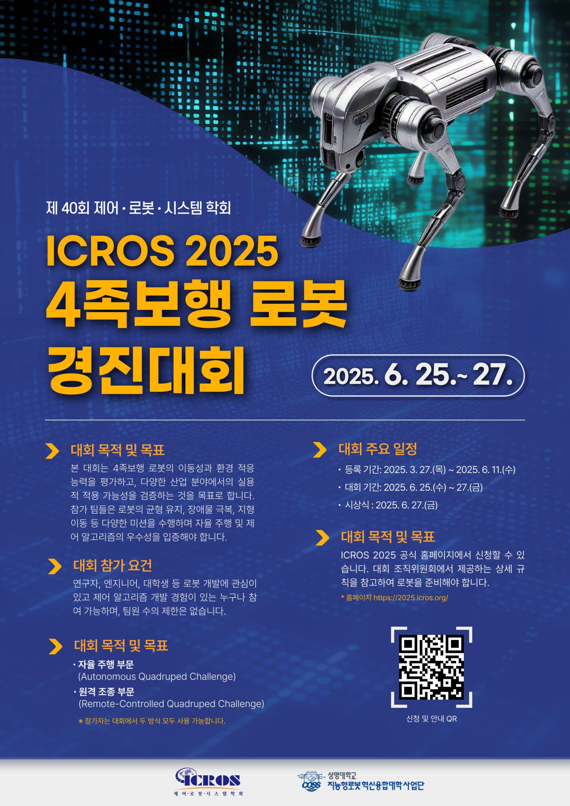
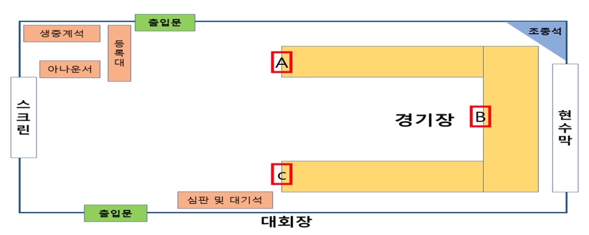
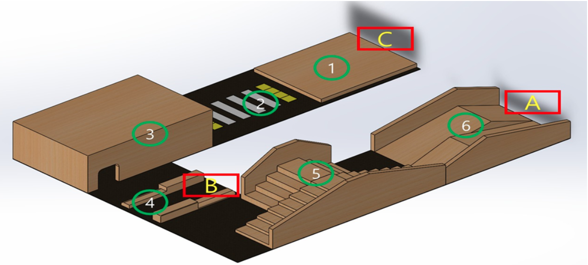

1. icros2025 4족보행 대회 소개
Competition
legged-robot
icros2025 4족보행 대회 소개
개요

이번 대회는 사족보행로봇의 자율주행 및 원격조종 부분의 성능을 겨루는 장으로, 참가자들은 주어진 규정에 따라 각자의 로봇을 설계하고 조종하게 됩니다. 저희 팀은 “원격 조종” 파트에 참가하여, 직접 조종하는 방식으로 미션을 수행할 예정입니다. 대회 주요 규정은 아래 표에 정리하였습니다.
ICROS 2025 4족보행로봇 챌린지: 원격 조종 부문 규정 요약
1. 대회 개요 및 참가 조건
| 항목 | 내용 |
|---|---|
| 대회명 | ICROS 2025 4족보행로봇 챌린지 |
| 주제 | 4족 보행 로봇을 이용한 일상 생활 미션 수행 |
| 참가 자격 | 팀장 1명 + 팀원 최대 3명 (총 4명, 초과시 운영측 문의) |
| 등록 | ICROS 2025 학회 등록 + 대회 홈페이지 구글 폼 등록 |
| 로봇 소유 | 각 팀은 고유한 로봇 1대 보유 (공유 불가) |
| 부문 선택 | 자율 주행 / 원격 조종 중 택1 (저희 팀은 원격 조종) |
| 대회 장소 | 전북대 컨벤션센터 지하 1층 102호 |
| 대회 방식 | 오프라인 현장 대회 (기기 검사 → 예선 → 본선) |
2. 로봇 및 장비 규정
| 항목 | 내용 |
|---|---|
| 로봇 규격 | 가로 70~85cm, 폭 30~40cm, 높이 35~45cm |
| 동작 전원 | 온보드 배터리(15000mAh 이하, 안전검사 통과) |
| 센서 | 온보드/고정 센서만 사용, 외부 데이터 전송 금지 |
| 무선통신 | 무선 공유기 사용 가능(SSID는 팀명), 운영 방해 시 제한 가능 |
| 조종 콘솔 | 운영측 공간 내, 최대 2명 조종자, 외부 정보 제공 금지 |
| 외부장치 | 외부 센서/컴퓨팅/제어 금지(응급상황 제외) |
3. 경기 진행 및 점수
예선
| 항목 | 내용 |
|---|---|
| 방식 | 트랙 내 출발~도착, 순서대로 코스 통과, 연습 가능 |
| 점수 | 원격 조종 완주 60점, 자율주행 완주 120점, 코스별 점수, 미완주 시 위치 기준 점수 예선 ( 6 > 5 > 4 > 3 > 2 > 1 ) 원격 조종: 완주 성공 시 60점 부여됩니다. 자율 주행 시: 완주 성공 시 120점 부여됩니다. |
| 순위 | 점수 → 시간 순, 동점시 시간 우선 |
| 재시도 | 팀당 부여 시간 내 재시도(재부팅) 가능 |
| 개입 | 트랙 내 참가자 개입 시 무효, 재시도 |
본선
| 항목 | 내용 |
|---|---|
| 방식 | 예선전 순위의 역순으로 진행. 배달 미션(바구니+물품), 출발~도착, 장애물 통과 |
| 점수 | 원격 조종 완주 100점, 자율주행 완주 200점, 코스별 점수, 미완주 시 위치/물품 기준 점수 본선 ( 4 > 3 > 2 > 1 > 1 > 2 > 3 > 4 > 5 > 6) 원격 조종: 완주 성공 시 100점이 부여됩니다. 자율 주행 시: 완주 성공 시 200점이 부여됩니다. 배달 물품: 배달 물품이 바닥에 떨어지는 경우 개수에 따라 -1점 페널티가 적용 됩니다. |
| 페널티 | 배달 물품 낙하 시 개당 -1점, 장애물 충돌 시 패널티 |
| 순위 | 점수 → 배달 물품 개수 → 시간 → 도착 위치 순 |
| 재시도 | 팀당 부여 시간 내 재시도(재부팅) 가능 |
4. 트랙 및 장애물


| 항목 | 내용 |
|---|---|
| 트랙 | A(수령)~B(도착) 구역, 장애물(연석, 볼라드, 킥보드 등), 바닥: 단단한 재질 + 섬유 트랙 + 나무 |
| 장애물 규정 | 로봇 너비 이상 간격, 폼/고무/나무 등 안전 재질, 충돌 시 손상 없어야 함 |
5. 심판 및 운영
| 항목 | 내용 |
|---|---|
| 심판 권한 | 규정 위반/위험 시 경기 중단, 점수 반영, 불공정 행위 시 기록 무효화 |
| 오픈소스 | 우승팀 알고리즘 오픈소스 공개 권장 |
6. 대회 일정 (2025년 기준)
| 날짜 | 내용 |
|---|---|
| 4월 14일 | 참가자 등록 시작 |
| 5월 31일 | 참가자 등록 종료 |
| 6월 13일 | 참가자 오리엔테이션 |
| 6월 25일 | 개회식 및 트랙 공개, 기기검사 |
| 6월 26일 | 예선 |
| 6월 27일 | 본선 및 폐회식 |
참고 및 추가 안내
- 자세한 규정 전문은 팀원 모두가 숙지해야 하며, 대회 공식 규정 문서 및 QRCKOREA 공식 홈페이지에서 최신 정보를 확인하세요.
- 원격 조종 부문은 콘솔 내 2명만 조종 가능, 외부 정보 제공 금지 등 현장 규정에 유의해야 합니다.
- 배달 미션과 장애물 통과 등 실제 미션 상황을 충분히 연습하고, 페널티 항목(물품 낙하, 장애물 충돌 등)에 주의하세요.